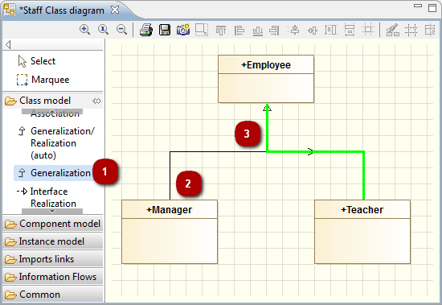

Drawing links in a diagram¶
Introduction¶
In Modelio diagrams, there are four different ways of drawing links:
- The orthogonal mode, where a link contains one or more right angles
- The direct mode, where a link is presented as a straight line
- The bendpoint mode, where a link is presented in the manner of your choice
- The rake mode, where a link is presented in rake bar form
All Modelio diagrams include the model expert feature, which provides real-time assistance when you are creating links in diagrams. If you try to create an authorized element (in this example, an association between two classes), the model expert highlights the concerned element in green, indicating that the creation operation you are attempting is allowed. If you try to create an unauthorized link (for example, an association between a package and a class), the model expert highlights the concerned element in red, indicating that the creation operation you are attempting is not allowed.
Drawing links in orthogonal mode¶

Drawing an association between two classes in orthogonal mode (default mode)
- Click on the “Create an association” icon in the diagram palette.
- Click on the origin class.
- Draw your link, with any desired intermediate points, and then click on the destination class.
Drawing links in bendpoint mode¶

Drawing the same association but this time in bendpoint mode (using Shift)
- Click on the “Create an association” icon in the diagram palette.
- Click on the origin class.
- Draw your link while holding down the Shift key, with any desired intermediate points, and then click on the destination class.
Drawing links in rake-bar mode (shared target links)¶
Inheritance links linking more than two elements are automatically presented in rake-bar mode. Links in rake-bar mode can be drawn vertically,
horizontally, pointing up or pointing down.
Additional elements can be added to the same rake bar link, simply by clicking on the link itself.

Drawing an inheritance link in rake-bar mode
- Click on the “Create a Generalization” icon in the diagram palette.
- Click on the origin class.
- Draw your link with any desired intermediate points, and then click on the already existing Generalization.